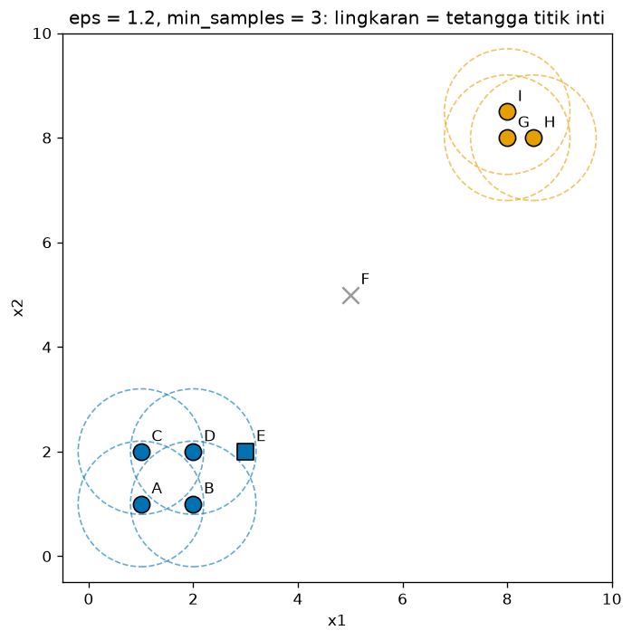
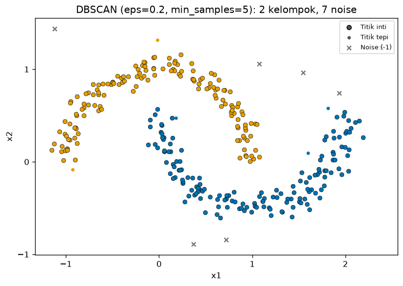
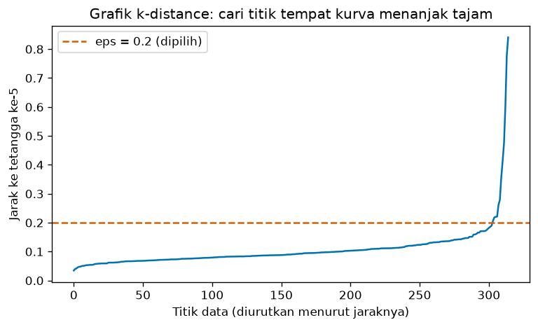
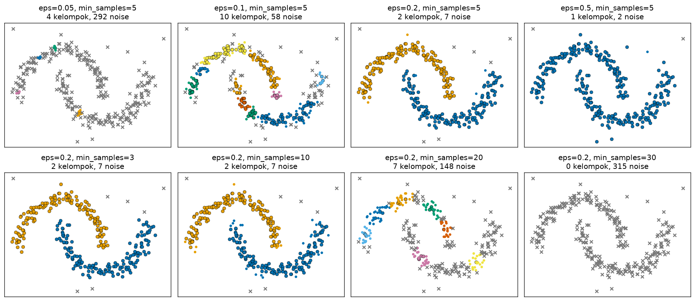
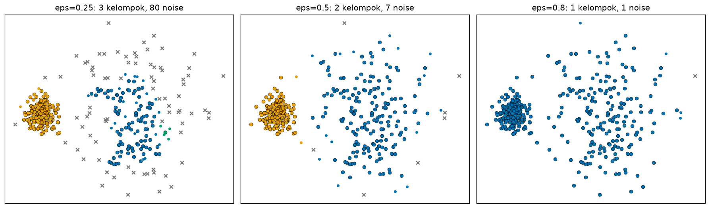
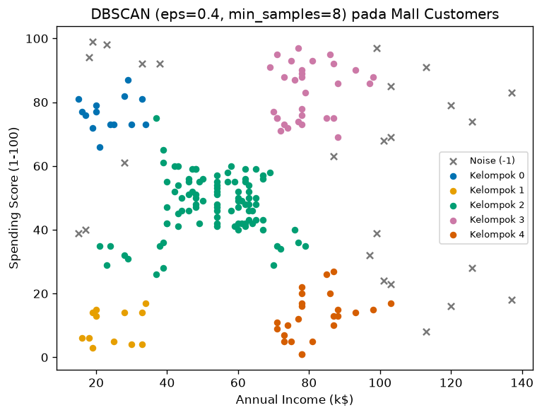

Bab 4 — DBSCAN Clustering¶
Learning Objectives¶
Setelah mempelajari bab ini, kamu mampu:
- Menjelaskan ide density-based clustering dan mengapa ia berguna.
- Membedakan core point, border point, dan noise point.
- Menjelaskan arti
epsdanmin_samples, termasuk bahwamin_samplesmenghitung titik itu sendiri. - Menjelaskan density reachability dan density connectivity.
- Menjalankan DBSCAN langkah demi langkah pada data kecil secara manual.
- Memakai
DBSCANdi scikit-learn dan membacalabels_(dengan label-1untuk noise) dancore_sample_indices_. - Memilih
epsdengan bantuan grafik k-distance. - Menjelaskan pengaruh
eps,min_samples,metric,algorithm, danleaf_size. - Mengenali keterbatasan DBSCAN pada data dengan kepadatan berbeda.
Introduction¶
Bayangkan kamu melihat peta malam hari dari udara. Kota-kota tampak sebagai titik-titik cahaya yang rapat, dipisahkan oleh daerah gelap yang jarang penduduknya. Satu-dua lampu yang menyendiri di tengah hutan jelas bukan bagian dari kota mana pun. Cara kita mengenali kota di sini bukan dengan mencari "pusat kota", melainkan dengan melihat di mana titik-titik rapat.
Itulah ide DBSCAN (Density-Based Spatial Clustering of Applications with Noise):
- Kelompok adalah daerah yang rapat, dipisahkan oleh daerah yang jarang.
- Titik di daerah jarang adalah noise, bukan anggota kelompok mana pun.
- Bentuk kelompok bebas (melengkung, memanjang), dan jumlah kelompok tidak ditentukan di awal.
Bab 1 sudah menunjukkan hasil awalnya: pada data bulan sabit, DBSCAN mengikuti bentuk data, sedangkan K-Means memotongnya. Bab ini menjelaskan mengapa.
Prasyarat
Bab ini memakai jarak Euclidean dan matriks jarak (Level 3, Bab 5), konsep kepadatan (Level 3, Bab 2), dan penyamaan skala (Level 2, Bab 10). Perbandingan dengan K-Means dan hierarchical muncul beberapa kali.
Fundamental Concepts¶
| Istilah | Arti |
|---|---|
| Density-based clustering | Clustering yang mendefinisikan kelompok sebagai daerah padat |
Epsilon (eps, \( \varepsilon \)) |
Radius lingkungan di sekitar sebuah titik |
| Neighborhood | Semua titik yang berjarak paling jauh eps dari sebuah titik, termasuk titik itu sendiri |
Minimum samples (min_samples) |
Jumlah minimum titik dalam sebuah lingkungan (termasuk titik itu sendiri) agar daerah itu dianggap padat |
| Core point | Titik yang lingkungannya berisi sedikitnya min_samples titik. "Jantung" kelompok |
| Border point | Bukan core, tetapi berada dalam lingkungan sebuah core point. "Tepi" kelompok |
| Noise point | Bukan core dan bukan border. Diberi label -1 |
| Directly density-reachable | Titik \( q \) ada di lingkungan core point \( p \) |
| Density-reachable | \( q \) bisa dicapai dari \( p \) lewat rantai core point yang saling bertetangga |
| Density-connected | Dua titik yang sama-sama bisa dicapai dari satu titik lain |
| Cluster | Himpunan titik yang saling density-connected |
Detailed Explanation¶
Mengapa pendekatan berbasis kepadatan berguna?¶
K-Means (Bab 2) membayangkan kelompok sebagai gumpalan bulat di sekitar pusat. Banyak data nyata tidak seperti itu:
- Bentuk bebas. Jalur pergerakan, sungai, atau bulan sabit.
- Ada noise. Pencilan yang tidak termasuk kelompok mana pun.
- Jumlah kelompok tidak diketahui.
DBSCAN menangani ketiganya: kelompok tumbuh mengikuti titik-titik yang saling berdekatan, noise tersaring otomatis, dan jumlah kelompok adalah hasil, bukan masukan.
Tiga jenis titik¶
Pilih dua angka: eps dan min_samples. Untuk tiap titik \( p \), hitung berapa titik ada dalam radius eps:
flowchart TD
A[Titik p] --> B{Jumlah titik dalam<br/>radius eps dari p<br/>termasuk p ≥ min_samples?}
B -- Ya --> C[Core point<br/>bagian dalam kelompok]
B -- Tidak --> D{Berada dalam radius eps<br/>dari sebuah core point?}
D -- Ya --> E[Border point<br/>tepi kelompok]
D -- Tidak --> F[Noise point<br/>label -1]- Core point: daerah di sekitarnya padat.
- Border point: dirinya sendiri tidak padat, tetapi menempel pada daerah padat. Ia ikut kelompok core point tetangganya.
- Noise point: menyendiri, tidak padat dan tidak dekat daerah padat.
Algoritma DBSCAN langkah demi langkah¶
- Untuk setiap titik, hitung lingkungannya (semua titik dalam radius
eps). - Tandai core point: titik yang lingkungannya berisi sedikitnya
min_samplestitik. - Ambil satu core point yang belum punya kelompok. Buat kelompok baru untuknya.
- Perluas kelompok: masukkan semua tetangganya. Untuk setiap tetangga yang juga core point, masukkan tetangga-tetangganya juga, dan seterusnya. Tetangga yang bukan core point (border) dimasukkan tetapi tidak memperluas lebih jauh.
- Ulangi langkah 3 dan 4 sampai semua core point sudah punya kelompok.
- Titik yang tidak masuk kelompok mana pun adalah noise (label
-1).
Kelompok bisa tumbuh panjang atau melengkung karena perluasan mengikuti rantai titik padat, bukan jarak ke pusat.
Contoh manual pada 9 titik¶
Sembilan titik dan parameter \( \varepsilon = 1{,}2 \), min_samples = 3:
| Titik | A | B | C | D | E | F | G | H | I |
|---|---|---|---|---|---|---|---|---|---|
| \( (x_1, x_2) \) | (1, 1) | (2, 1) | (1, 2) | (2, 2) | (3, 2) | (5, 5) | (8, 8) | (8,5; 8) | (8; 8,5) |
Langkah 1: lingkungan tiap titik. Hitung jarak Euclidean dan ambil titik dengan jarak \( \le 1{,}2 \):
- A: ke B jaraknya 1, ke C 1, ke D \( \sqrt{2} \approx 1{,}414 \) (terlalu jauh). Lingkungan \( \{A, B, C\} \) → 3 titik.
- B: ke A 1, ke D 1, ke C 1,414, ke E \( \sqrt{2} \approx 1{,}414 \). Lingkungan \( \{A, B, D\} \) → 3 titik.
- C: lingkungan \( \{A, C, D\} \) → 3 titik.
- D: ke B 1, ke C 1, ke E 1. Lingkungan \( \{B, C, D, E\} \) → 4 titik.
- E: hanya D yang dekat (jarak 1). Lingkungan \( \{D, E\} \) → 2 titik.
- F (5, 5): tidak ada titik lain dalam radius. Lingkungan \( \{F\} \) → 1 titik.
- G, H, I: jarak G–H = 0,5, G–I = 0,5, H–I \( \approx 0{,}707 \). Masing-masing punya lingkungan \( \{G, H, I\} \) → 3 titik.
Langkah 2: core point. Titik dengan sedikitnya 3 titik di lingkungannya: A, B, C, D, G, H, I. E hanya punya 2, jadi bukan core.
Langkah 3 dan 4: perluasan. Mulai dari A (core), buat kelompok 0. Tetangga A: B, C. Keduanya core, jadi tetangga B (D) dan C (D) ikut masuk. D adalah core, jadi tetangganya E ikut masuk. E bukan core, jadi perluasan berhenti di E. Kelompok 0 = \( \{A, B, C, D, E\} \). Lalu core berikutnya yang belum punya kelompok adalah G. Kelompok 1 = \( \{G, H, I\} \).
Langkah 6: noise. F tidak masuk kelompok mana pun, jadi F adalah noise.
Jenis titik: core = A, B, C, D, G, H, I; border = E (bukan core, tetapi berada dalam radius core D); noise = F. Hasil ini sama dengan output kode di bawah.
Density reachability dan connectivity dengan contoh¶
Pada contoh di atas, E bisa "dicapai" dari A lewat rantai \( A \to B \to D \to E \): jarak tiap langkah 1, dan A, B, D semuanya core. Namun hubungannya tidak simetris: E dicapai dari D (karena D core), tetapi D tidak "dicapai dari E" dalam arti yang sama karena E bukan core. Meski begitu, A dan E density-connected, karena keduanya bisa dicapai dari titik yang sama (A sendiri). Definisi formal ada di Mathematical Foundation.
Intuisi geometris: ambang kepadatan¶
Lingkungan berbentuk lingkaran berjari-jari \( \varepsilon \) di dua dimensi, luasnya \( \pi\varepsilon^2 \). Jadi min_samples titik dalam lingkaran itu berarti kepadatan minimal sekitar:
Pada contoh manual: \( \frac{3}{\pi \times 1{,}2^2} \approx 0{,}663 \) titik per satuan luas. Daerah yang kepadatannya di bawah ambang itu tidak membentuk core point.
Parameter penting di scikit-learn¶
| Parameter | Bawaan | Arti |
|---|---|---|
eps |
0,5 | Radius lingkungan |
min_samples |
5 | Jumlah minimum titik (termasuk titik itu sendiri) dalam lingkungan agar sebuah titik menjadi core |
metric |
"euclidean" |
Ukuran jarak, misalnya "manhattan". Bisa juga "precomputed" bila kamu memberi matriks jarak sendiri |
algorithm |
"auto" |
Cara mencari tetangga: "auto", "ball_tree", "kd_tree", atau "brute". Memengaruhi kecepatan dan memori, bukan hasil |
leaf_size |
30 | Ukuran daun pada pohon pencarian (ball_tree atau kd_tree). Juga hanya memengaruhi kecepatan dan memori |
Atribut setelah fit:
| Atribut | Isi |
|---|---|
labels_ |
Label tiap titik. Noise diberi label -1, kelompok bernomor 0, 1, 2, ... |
core_sample_indices_ |
Nomor baris semua core point |
Label -1 bukan sebuah kelompok
Di scikit-learn, DBSCAN memberi -1 pada noise. Jangan menghitung -1 sebagai kelompok. Jumlah kelompok adalah len(set(labels) - {-1}). Pada kode di bab ini, noise juga digambar dengan tanda x abu-abu.
Border point bisa bergantung urutan data
Jika sebuah border point berada dalam jangkauan dua kelompok sekaligus, ia diberikan ke kelompok yang ditemukan lebih dulu. Jadi mengubah urutan baris data bisa menukar kelompok sebuah border point. Core point dan noise tidak terpengaruh.
Memilih eps dengan grafik k-distance¶
Sebuah titik adalah core jika kelompok min_samples tetangga terdekatnya (termasuk dirinya) semuanya berada dalam radius eps. Artinya, titik itu core jika jarak ke tetangga ke-min_samples-nya \( \le \varepsilon \). Dari sini lahir cara memilih eps:
- Pilih
min_samples(misalnya \( k \)). - Untuk tiap titik, hitung jarak ke tetangga ke-\( k \) (k-distance, dengan titik itu sendiri dihitung sebagai tetangga pertama).
- Urutkan nilainya dari kecil ke besar dan gambar.
- Cari titik tempat kurva mulai menanjak tajam ("siku"). Titik di sebelah kiri siku berada di daerah padat, dan titik di sebelah kanannya cenderung noise. Nilai k-distance di siku itu adalah kandidat
eps.
Ini hanya petunjuk, bukan aturan. Seperti elbow pada K-Means, siku kadang tidak jelas.
Memilih min_samples¶
Aturan praktis yang sering dipakai: min_samples sekurang-kurangnya jumlah fitur + 1, dan dinaikkan untuk data yang besar atau berisik. Nilai kecil (misalnya 3) membuat DBSCAN longgar: banyak core point dan lebih sedikit noise. Nilai besar membuat DBSCAN ketat: hanya daerah yang benar-benar padat menjadi kelompok.
Kepadatan yang berbeda¶
DBSCAN memakai satu pasang eps dan min_samples untuk seluruh data. Jika satu kelompok rapat dan yang lain renggang, tidak ada satu eps yang cocok untuk keduanya:
epskecil (cocok untuk kelompok rapat): kelompok renggang pecah dan banyak titiknya menjadi noise.epsbesar (cocok untuk kelompok renggang): kelompok rapat dan kelompok-kelompok yang berdekatan menyatu.
Algoritma turunan seperti OPTICS dan HDBSCAN (keduanya ada di sklearn.cluster) dirancang untuk kepadatan beragam, tetapi di luar cakupan bab ini.
Kelebihan dan keterbatasan¶
| Kelebihan | Keterbatasan |
|---|---|
| Tidak perlu menentukan jumlah kelompok | Hasil sangat peka terhadap eps dan min_samples |
| Bisa menemukan kelompok berbentuk bebas | Sulit untuk kelompok dengan kepadatan berbeda |
Mengenali noise (label -1) |
eps bergantung pada skala fitur, jadi wajib diskalakan |
Hasilnya hampir deterministik (tanpa random_state) |
Pada dimensi tinggi, konsep "kepadatan" kurang bermakna (Level 3, Bab 6) |
| Satu pasang parameter yang bisa dipahami secara geometris | Tidak punya predict untuk data baru |
Mathematical Foundation¶
Misalkan data \( X = \{\mathbf{x}_1, \dots, \mathbf{x}_n\} \), jarak \( d(\cdot, \cdot) \), radius \( \varepsilon \), dan ambang \( \text{MinPts} \) (yaitu min_samples).
Lingkungan dan core point¶
\( N_\varepsilon(\mathbf{p}) \) adalah himpunan semua titik yang berjarak paling jauh \( \varepsilon \) dari \( \mathbf{p} \). Titik \( \mathbf{p} \) sendiri termasuk, karena \( d(\mathbf{p}, \mathbf{p}) = 0 \le \varepsilon \).
\( \lvert N_\varepsilon(\mathbf{p}) \rvert \) adalah jumlah titik dalam lingkungan. Contoh angka: pada contoh manual, \( N_{1{,}2}(D) = \{B, C, D, E\} \) sehingga \( \lvert N \rvert = 4 \ge 3 \) dan D adalah core. \( N_{1{,}2}(E) = \{D, E\} \) sehingga \( \lvert N \rvert = 2 < 3 \) dan E bukan core.
Reachability dan connectivity¶
- Directly density-reachable: \( \mathbf{q} \) directly density-reachable dari \( \mathbf{p} \) jika \( \mathbf{q} \in N_\varepsilon(\mathbf{p}) \) dan \( \mathbf{p} \) adalah core point.
- Density-reachable: \( \mathbf{q} \) density-reachable dari \( \mathbf{p} \) jika ada rantai \( \mathbf{p} = \mathbf{p}_1, \mathbf{p}_2, \dots, \mathbf{p}_m = \mathbf{q} \) dengan setiap \( \mathbf{p}_{i+1} \) directly density-reachable dari \( \mathbf{p}_i \).
- Density-connected: \( \mathbf{p} \) dan \( \mathbf{q} \) density-connected jika ada titik \( \mathbf{o} \) yang dari situ keduanya density-reachable.
Reachability tidak simetris (karena border point tidak bisa menjadi titik tengah rantai), sedangkan connectivity simetris.
Cluster dalam DBSCAN adalah himpunan maksimal titik yang saling density-connected. Noise adalah titik yang tidak termasuk cluster mana pun.
Contoh angka (rantai): \( A \to B \to D \to E \). Jarak A–B = 1, B–D = 1, D–E = 1, semuanya \( \le 1{,}2 \). A, B, D adalah core, jadi tiap langkah sah dan E density-reachable dari A.
Core point dan k-distance¶
Misalkan \( d_k(\mathbf{p}) \) adalah jarak dari \( \mathbf{p} \) ke tetangga terdekat ke-\( k \) (dengan \( \mathbf{p} \) sendiri dihitung sebagai tetangga pertama). Maka:
Alasannya: lingkungan berisi sedikitnya \( k \) titik tepat ketika titik ke-\( k \) terdekat masih berada dalam radius \( \varepsilon \). Inilah dasar grafik k-distance.
Ambang kepadatan¶
Pada dua dimensi, luas lingkungan adalah \( \pi \varepsilon^2 \) sehingga kepadatan minimalnya \( \text{MinPts} / (\pi \varepsilon^2) \). Dengan \( \varepsilon = 0{,}2 \) dan \( \text{MinPts} = 5 \) (parameter yang kita pakai pada data bulan sabit):
Kompleksitas¶
Pekerjaan utama DBSCAN adalah mencari tetangga tiap titik. Dengan struktur pencarian ruang (kd_tree atau ball_tree) pada data berdimensi rendah, rata-rata biayanya mendekati \( n \log n \). Kasus terburuknya mendekati \( n^2 \) (misalnya brute, atau eps yang sangat besar sehingga tiap titik punya hampir semua titik sebagai tetangga). Memori juga bergantung pada rata-rata jumlah tetangga: eps yang terlalu besar bisa membuat memori membengkak.
Python Implementation¶
Skrip lengkapnya ada di examples/level-4/04_dbscan_clustering.py, dan versi notebook-nya di notebooks/level-4/04-dbscan-clustering.ipynb.
Konteks masalah: menemukan kelompok berbentuk bebas dan noise, serta memahami pengaruh eps dan min_samples.
Dataset:
- 9 titik buatan tangan untuk hitungan manual.
- Bulan sabit dengan noise:
make_moons(300 titik) ditambah 15 titik acak sebagai noise. Cocok karena bentuknya non-konveks dan ada noise, kelemahan K-Means dan kekuatan DBSCAN. - Dua gerombol dengan kepadatan berbeda:
make_blobsdengan satu gerombol rapat dan satu renggang, untuk menunjukkan keterbatasan DBSCAN. - Mall Customers (200 pelanggan, terskala): contoh tabular nyata.
Pustaka: NumPy, pandas, Matplotlib, scikit-learn.
Bagian A — Siapkan alat¶
import numpy as np
import pandas as pd
import matplotlib.pyplot as plt
from matplotlib.patches import Circle
from sklearn.cluster import DBSCAN
from sklearn.datasets import make_blobs, make_moons
from sklearn.neighbors import NearestNeighbors
from sklearn.preprocessing import StandardScaler
Penjelasan: DBSCAN adalah algoritmanya. NearestNeighbors dipakai untuk grafik k-distance. Circle dari Matplotlib menggambar lingkaran eps. StandardScaler menyamakan skala fitur Mall Customers.
Bagian B — Sembilan titik dan klasifikasi manual¶
# Sembilan titik: gerombol kiri bawah (A-E), satu titik sendirian (F), gerombol kanan atas (G-I)
names = list("ABCDEFGHI")
P = np.array(
[[1, 1], [2, 1], [1, 2], [2, 2], [3, 2], # A, B, C, D, E
[5, 5], # F
[8, 8], [8.5, 8], [8, 8.5]], # G, H, I
dtype=float,
)
eps = 1.2
min_samples = 3
Penjelasan: names = list("ABCDEFGHI") membuat daftar huruf ["A", ..., "I"]. P adalah array 9 baris × 2 kolom berisi koordinat. eps dan min_samples menyimpan parameter yang kita pakai.
# Matriks jarak Euclidean antar semua pasangan titik, bentuk (9, 9)
dist = np.linalg.norm(P[:, None, :] - P[None, :, :], axis=2)
# Tetangga = titik dengan jarak <= eps (termasuk titik itu sendiri, jaraknya 0)
is_neighbor = dist <= eps
n_neighbors = is_neighbor.sum(axis=1)
is_core = n_neighbors >= min_samples
# Tepi: bukan inti, tetapi bertetangga dengan setidaknya satu titik inti
is_border = ~is_core & (is_neighbor & is_core[None, :]).any(axis=1)
is_noise = ~is_core & ~is_border
for i, name in enumerate(names):
tipe = "inti" if is_core[i] else ("tepi" if is_border[i] else "noise")
tetangga = [names[j] for j in np.where(is_neighbor[i])[0]]
print(f"{name}: {n_neighbors[i]} tetangga {tetangga} -> {tipe}")
A: 3 tetangga ['A', 'B', 'C'] -> inti
B: 3 tetangga ['A', 'B', 'D'] -> inti
C: 3 tetangga ['A', 'C', 'D'] -> inti
D: 4 tetangga ['B', 'C', 'D', 'E'] -> inti
E: 2 tetangga ['D', 'E'] -> tepi
F: 1 tetangga ['F'] -> noise
G: 3 tetangga ['G', 'H', 'I'] -> inti
H: 3 tetangga ['G', 'H', 'I'] -> inti
I: 3 tetangga ['G', 'H', 'I'] -> inti
Penjelasan baris demi baris:
P[:, None, :] - P[None, :, :]memasangkan setiap titik dengan setiap titik lain (broadcasting, seperti di Bab 2).np.linalg.norm(..., axis=2)menghitung jaraknya, menghasilkan matriks jarak(9, 9).is_neighbor = dist <= epsmenghasilkan matriksTrue/False: apakah titikjberada dalam radiusepsdari titiki. DiagonalnyaTruekarena jarak titik ke dirinya nol, sehingga titik itu menghitung dirinya sendiri.n_neighbors = is_neighbor.sum(axis=1)menjumlahkanTrueper baris: ukuran lingkungan tiap titik.is_core = n_neighbors >= min_samplesmenandai core point.is_border:(is_neighbor & is_core[None, :])bernilaiTruepada pasangan (titiki, titikj) ketikajbertetangga denganidanjcore..any(axis=1)bertanya: adakah core point di antara tetangga titiki? Dikombinasikan dengan~is_core(bukan core), hasilnya adalah titik tepi.is_noise = ~is_core & ~is_border: bukan core dan bukan tepi. Tanda~adalah "bukan" untuk array boolean.- Perulangan terakhir mencetak tipe tiap titik dan daftar tetangganya.
np.where(is_neighbor[i])[0]mengambil nomor kolom yangTrue.
db_tiny = DBSCAN(eps=eps, min_samples=min_samples).fit(P)
print("\nlabels_ :", db_tiny.labels_.tolist())
print("core_sample_indices_ :", db_tiny.core_sample_indices_.tolist())
print("Sama dengan hitungan manual?", np.array_equal(np.sort(db_tiny.core_sample_indices_), np.where(is_core)[0]))
labels_ : [0, 0, 0, 0, 0, -1, 1, 1, 1]
core_sample_indices_ : [0, 1, 2, 3, 6, 7, 8]
Sama dengan hitungan manual? True
Penjelasan: DBSCAN(eps=eps, min_samples=min_samples).fit(P) menjalankan algoritma sungguhan. labels_ adalah label tiap titik, dan core_sample_indices_ adalah nomor core point. Baris terakhir memeriksa apakah core point dari scikit-learn sama dengan hitungan manual kita (np.array_equal).
palette = ["#0072B2", "#E69F00", "#009E73", "#CC79A7", "#D55E00", "#56B4E9", "#F0E442"]
fig, ax = plt.subplots(figsize=(6.5, 6))
for i, name in enumerate(names):
label = db_tiny.labels_[i]
color = "#999999" if label == -1 else palette[label % len(palette)]
if is_core[i]:
ax.add_patch(Circle(P[i], eps, fill=False, edgecolor=color, linestyle="--", alpha=0.6))
ax.scatter(*P[i], s=120, color=color, edgecolor="black", zorder=3)
elif is_border[i]:
ax.scatter(*P[i], s=120, color=color, edgecolor="black", marker="s", zorder=3)
else:
ax.scatter(*P[i], s=120, color=color, marker="x", zorder=3)
ax.annotate(name, P[i], textcoords="offset points", xytext=(7, 7))
ax.set_aspect("equal")
ax.set_xlim(-0.5, 10)
ax.set_ylim(-0.5, 10)
ax.set_xlabel("x1")
ax.set_ylabel("x2")
ax.set_title(f"eps = {eps}, min_samples = {min_samples}: lingkaran = tetangga titik inti")
plt.tight_layout()
plt.show()

Penjelasan: palette adalah daftar warna. Untuk tiap titik: core digambar sebagai lingkaran dengan lingkaran putus-putus eps di sekelilingnya (Circle(..., fill=False, linestyle="--")), border sebagai persegi, noise sebagai tanda x abu-abu. ax.annotate(name, ...) menulis nama titik di dekatnya, dan ax.set_aspect("equal") memastikan lingkaran tampak bulat.
Bagian C — Bulan sabit dengan noise¶
X_moons, _ = make_moons(n_samples=300, noise=0.07, random_state=42)
# Tambahkan 15 titik acak sebagai noise
rng = np.random.default_rng(42)
noise_points = rng.uniform(low=[-1.5, -1.0], high=[2.5, 1.5], size=(15, 2))
X = np.vstack([X_moons, noise_points])
print("Bentuk X:", X.shape)
Penjelasan: make_moons(...) membuat dua bulan sabit. rng.uniform(low=[-1.5, -1.0], high=[2.5, 1.5], size=(15, 2)) mengambil 15 titik acak merata dalam sebuah persegi panjang, yang kita anggap noise. np.vstack([...]) menumpuk kedua kumpulan data menjadi X berisi 315 titik.
db = DBSCAN(eps=0.2, min_samples=5)
labels = db.fit_predict(X)
n_clusters = len(set(labels) - {-1})
n_noise = int(np.sum(labels == -1))
print("Label unik:", sorted(set(labels.tolist())))
print("Jumlah kelompok:", n_clusters)
print("Jumlah noise (label -1):", n_noise)
print("Ukuran tiap kelompok:", np.bincount(labels[labels >= 0]).tolist())
core_mask = np.zeros(len(X), dtype=bool)
core_mask[db.core_sample_indices_] = True
border_mask = (labels >= 0) & ~core_mask
noise_mask = labels == -1
print(f"Titik inti: {core_mask.sum()}, tepi: {border_mask.sum()}, noise: {noise_mask.sum()}")
Label unik: [-1, 0, 1]
Jumlah kelompok: 2
Jumlah noise (label -1): 7
Ukuran tiap kelompok: [155, 153]
Titik inti: 303, tepi: 5, noise: 7
Penjelasan:
DBSCAN(eps=0.2, min_samples=5)danfit_predict(X)menjalankan algoritma.set(labels) - {-1}membuang label noise sebelum menghitung kelompok.np.sum(labels == -1)menghitung noise.np.bincount(labels[labels >= 0])menghitung ukuran tiap kelompok tanpa noise:labels >= 0memilih label yang bukan-1.core_mask[db.core_sample_indices_] = Truemembuat array boolean yangTruepada core point. Laluborder_maskadalah titik yang berkelompok tetapi bukan core, dannoise_maskadalah titik berlabel-1.
def plot_dbscan(ax, X, labels, core_mask, title):
"""Menggambar hasil DBSCAN: inti (bulat besar), tepi (bulat kecil), noise (x abu-abu)."""
for k in sorted(set(labels) - {-1}):
in_k = labels == k
color = palette[k % len(palette)]
ax.scatter(X[in_k & core_mask, 0], X[in_k & core_mask, 1], s=28, color=color, edgecolor="black", linewidth=0.4)
ax.scatter(X[in_k & ~core_mask, 0], X[in_k & ~core_mask, 1], s=10, color=color)
ax.scatter(X[labels == -1, 0], X[labels == -1, 1], s=26, color="#777777", marker="x")
ax.set_title(title)
ax.set_xticks([])
ax.set_yticks([])
Penjelasan: fungsi bantu plot_dbscan menggambar hasil: untuk tiap kelompok, core point sebagai bulatan besar bertepi hitam, border point sebagai bulatan kecil, dan noise sebagai x abu-abu. Fungsi ini dipakai berulang di gambar-gambar berikutnya supaya kita tidak menulis kode yang sama berkali-kali.
fig, ax = plt.subplots(figsize=(7, 5))
plot_dbscan(ax, X, labels, core_mask, f"DBSCAN (eps=0.2, min_samples=5): {n_clusters} kelompok, {n_noise} noise")
ax.set_xticks([-1, 0, 1, 2])
ax.set_yticks([-1, 0, 1])
ax.set_xlabel("x1")
ax.set_ylabel("x2")
ax.scatter([], [], s=28, color="#555555", edgecolor="black", label="Titik inti")
ax.scatter([], [], s=10, color="#555555", label="Titik tepi")
ax.scatter([], [], s=26, color="#777777", marker="x", label="Noise (-1)")
ax.legend(loc="upper right", fontsize=8)
plt.tight_layout()
plt.show()

Penjelasan: memanggil plot_dbscan dan menambahkan legenda. ax.scatter([], [], ...) menggambar "titik kosong" yang hanya dipakai untuk membuat entri legenda.
Bagian D — Memilih eps dengan k-distance¶
k = 5 # sama dengan min_samples
nn = NearestNeighbors(n_neighbors=k).fit(X)
distances, _ = nn.kneighbors(X) # kolom pertama = titik itu sendiri (jarak 0)
k_distance = np.sort(distances[:, -1]) # jarak ke tetangga ke-k, diurutkan naik
for q in [0, 50, 75, 90, 95, 98, 100]:
print(f"persentil {q:>3}: jarak ke-{k} = {np.percentile(k_distance, q):.3f}")
persentil 0: jarak ke-5 = 0.035
persentil 50: jarak ke-5 = 0.090
persentil 75: jarak ke-5 = 0.114
persentil 90: jarak ke-5 = 0.146
persentil 95: jarak ke-5 = 0.174
persentil 98: jarak ke-5 = 0.274
persentil 100: jarak ke-5 = 0.841
Penjelasan:
NearestNeighbors(n_neighbors=k).fit(X)menyiapkan pencari tetangga terdekat.nn.kneighbors(X)mengembalikan jarak dan nomor tetangga terdekat tiap titik. Kolom pertama adalah titik itu sendiri (jarak 0), sesuai aturan DBSCAN bahwa titik menghitung dirinya.distances[:, -1]mengambil kolom terakhir: jarak ke tetangga ke-5.np.sort(...)mengurutkannya dari kecil ke besar.np.percentile(k_distance, q)mencetak nilai pada persentil tertentu, supaya kita melihat di mana kurva mulai menanjak.
fig, ax = plt.subplots(figsize=(6.5, 4))
ax.plot(k_distance, color="#0072B2")
ax.axhline(0.2, color="#D55E00", linestyle="--", label="eps = 0.2 (dipilih)")
ax.set_xlabel("Titik data (diurutkan menurut jaraknya)")
ax.set_ylabel(f"Jarak ke tetangga ke-{k}")
ax.set_title("Grafik k-distance: cari titik tempat kurva menanjak tajam")
ax.legend()
plt.tight_layout()
plt.show()

Penjelasan: garis biru adalah k-distance terurut. Garis putus-putus oranye menandai eps = 0.2 yang kita pilih.
Bagian E — Pengaruh eps dan min_samples¶
def run_dbscan(X, eps, min_samples):
model = DBSCAN(eps=eps, min_samples=min_samples).fit(X)
core = np.zeros(len(X), dtype=bool)
core[model.core_sample_indices_] = True
return model.labels_, core
rows = []
for eps_value in [0.05, 0.1, 0.15, 0.2, 0.3, 0.5]:
lab, _ = run_dbscan(X, eps_value, 5)
rows.append({"eps": eps_value, "min_samples": 5,
"kelompok": len(set(lab) - {-1}), "noise": int(np.sum(lab == -1))})
for ms in [3, 5, 10, 20, 30]:
lab, _ = run_dbscan(X, 0.2, ms)
rows.append({"eps": 0.2, "min_samples": ms,
"kelompok": len(set(lab) - {-1}), "noise": int(np.sum(lab == -1))})
print(pd.DataFrame(rows).to_string(index=False))
eps min_samples kelompok noise
0.05 5 4 292
0.10 5 10 58
0.15 5 2 11
0.20 5 2 7
0.30 5 2 5
0.50 5 1 2
0.20 3 2 7
0.20 5 2 7
0.20 10 2 7
0.20 20 7 148
0.20 30 0 315
Penjelasan: fungsi run_dbscan menjalankan DBSCAN dan mengembalikan label serta penanda core. Dua perulangan mengubah eps (dengan min_samples=5 tetap) lalu min_samples (dengan eps=0.2 tetap), dan mengumpulkan jumlah kelompok dan noise ke dalam tabel pandas. Mengubah satu parameter pada satu waktu adalah cara yang jelas untuk melihat pengaruhnya.
fig, axes = plt.subplots(2, 4, figsize=(16, 7))
for ax, eps_value in zip(axes[0], [0.05, 0.1, 0.2, 0.5]):
lab, core = run_dbscan(X, eps_value, 5)
plot_dbscan(ax, X, lab, core, f"eps={eps_value}, min_samples=5\n{len(set(lab) - {-1})} kelompok, {int(np.sum(lab == -1))} noise")
for ax, ms in zip(axes[1], [3, 10, 20, 30]):
lab, core = run_dbscan(X, 0.2, ms)
plot_dbscan(ax, X, lab, core, f"eps=0.2, min_samples={ms}\n{len(set(lab) - {-1})} kelompok, {int(np.sum(lab == -1))} noise")
plt.tight_layout()
plt.show()

Penjelasan: grid 2 × 4: baris atas memvariasikan eps, baris bawah memvariasikan min_samples. axes[0] dan axes[1] adalah baris pertama dan kedua.
Bagian F — Kepadatan berbeda¶
# Satu gerombol rapat dan satu gerombol renggang
X_dens, _ = make_blobs(n_samples=[200, 200], centers=[[0, 0], [3, 0]],
cluster_std=[0.25, 0.9], random_state=42)
fig, axes = plt.subplots(1, 3, figsize=(15, 4.5), sharex=True, sharey=True)
for ax, eps_value in zip(axes, [0.25, 0.5, 0.8]):
lab, core = run_dbscan(X_dens, eps_value, 5)
sizes = np.bincount(lab[lab >= 0]).tolist()
print(f"eps = {eps_value}: {len(set(lab) - {-1})} kelompok, ukuran {sizes}, noise {int(np.sum(lab == -1))}")
plot_dbscan(ax, X_dens, lab, core, f"eps={eps_value}: {len(set(lab) - {-1})} kelompok, {int(np.sum(lab == -1))} noise")
plt.tight_layout()
plt.show()
eps = 0.25: 3 kelompok, ukuran [116, 199, 5], noise 80
eps = 0.5: 2 kelompok, ukuran [190, 203], noise 7
eps = 0.8: 1 kelompok, ukuran [399], noise 1

Penjelasan: make_blobs(n_samples=[200, 200], centers=[[0, 0], [3, 0]], cluster_std=[0.25, 0.9]) membuat dua gerombol dengan sebaran berbeda: satu rapat (std=0.25) dan satu renggang (std=0.9). Kita mencoba tiga nilai eps dan mencetak jumlah kelompok, ukurannya, dan noise.
Bagian G — metric, algorithm, dan leaf_size¶
reference = DBSCAN(eps=0.2, min_samples=5).fit_predict(X)
for algorithm in ["auto", "ball_tree", "kd_tree", "brute"]:
other = DBSCAN(eps=0.2, min_samples=5, algorithm=algorithm, leaf_size=10).fit_predict(X)
print(f"algorithm={algorithm:<9} leaf_size=10 -> label sama dengan bawaan? {np.array_equal(reference, other)}")
for metric in ["euclidean", "manhattan"]:
lab = DBSCAN(eps=0.2, min_samples=5, metric=metric).fit_predict(X)
print(f"metric={metric:<9} -> {len(set(lab) - {-1})} kelompok, {int(np.sum(lab == -1))} noise")
algorithm=auto leaf_size=10 -> label sama dengan bawaan? True
algorithm=ball_tree leaf_size=10 -> label sama dengan bawaan? True
algorithm=kd_tree leaf_size=10 -> label sama dengan bawaan? True
algorithm=brute leaf_size=10 -> label sama dengan bawaan? True
metric=euclidean -> 2 kelompok, 7 noise
metric=manhattan -> 2 kelompok, 10 noise
Penjelasan: kita membandingkan label dari tiap algorithm (dan leaf_size=10) dengan label bawaan memakai np.array_equal. Lalu kita membandingkan metric="euclidean" dengan "manhattan".
Bagian H — Mall Customers¶
df = pd.read_csv("data/mall_customers.csv")
features = ["Annual Income (k$)", "Spending Score (1-100)"]
X_mall = StandardScaler().fit_transform(df[features])
db_mall = DBSCAN(eps=0.4, min_samples=8)
df["Cluster"] = db_mall.fit_predict(X_mall)
print("Label unik:", sorted(df["Cluster"].unique().tolist()))
print("Jumlah per label:")
print(df["Cluster"].value_counts().sort_index())
print("\nRata-rata tiap kelompok (noise = -1):")
print(df.groupby("Cluster")[features].mean().round(1))
Label unik: [-1, 0, 1, 2, 3, 4]
Jumlah per label:
Cluster
-1 25
0 14
1 12
2 95
3 30
4 24
Name: count, dtype: int64
Rata-rata tiap kelompok (noise = -1):
Annual Income (k$) Spending Score (1-100)
Cluster
-1 83.0 60.5
0 23.6 76.4
1 24.6 9.6
2 53.3 47.8
3 79.5 83.1
4 81.9 13.0
Penjelasan: fitur diskalakan, lalu DBSCAN(eps=0.4, min_samples=8) dijalankan. df["Cluster"].value_counts().sort_index() menghitung jumlah per label (termasuk -1), dan groupby(...).mean() memberi profil rata-rata tiap kelompok. Karena rata-rata dihitung dari data asli (bukan terskala), angkanya mudah dibaca.
grid = {}
for eps_value in [0.2, 0.3, 0.4, 0.5]:
for ms in [4, 5, 8]:
lab = DBSCAN(eps=eps_value, min_samples=ms).fit_predict(X_mall)
grid[(eps_value, ms)] = f"{len(set(lab) - {-1})} kel, {int(np.sum(lab == -1))} noise"
table = pd.Series(grid).unstack()
table.index.name = "eps"
table.columns = [f"min_samples={c}" for c in table.columns]
print(table.to_string())
min_samples=4 min_samples=5 min_samples=8
eps
0.2 5 kel, 73 noise 7 kel, 77 noise 2 kel, 116 noise
0.3 8 kel, 23 noise 7 kel, 35 noise 5 kel, 72 noise
0.4 3 kel, 14 noise 4 kel, 15 noise 5 kel, 25 noise
0.5 2 kel, 8 noise 2 kel, 8 noise 2 kel, 15 noise
Penjelasan: kita menjalankan DBSCAN untuk 4 nilai eps × 3 nilai min_samples. Tiap hasil disimpan sebagai teks "jumlah kelompok, jumlah noise". pd.Series(grid).unstack() mengubah kamus dengan kunci ganda menjadi tabel dua dimensi.
# Kesalahan umum: eps = 0.3 dipakai pada data yang BELUM diskalakan (satuan: ribu dolar dan skor)
raw = DBSCAN(eps=0.3, min_samples=5).fit_predict(df[features].values)
print("Tanpa penyamaan skala, eps=0.3 ->", len(set(raw) - {-1}), "kelompok,", int(np.sum(raw == -1)), "noise dari", len(raw), "titik")
Penjelasan: kesalahan umum: memakai eps=0.3 pada data yang belum diskalakan. .values mengambil array mentah dari tabel.
fig, ax = plt.subplots(figsize=(6.5, 5))
for k in sorted(df["Cluster"].unique()):
members = df[df["Cluster"] == k]
if k == -1:
ax.scatter(members[features[0]], members[features[1]], s=30, color="#777777", marker="x", label="Noise (-1)")
else:
ax.scatter(members[features[0]], members[features[1]], s=22, color=palette[k % len(palette)], label=f"Kelompok {k}")
ax.set_xlabel(features[0])
ax.set_ylabel(features[1])
ax.set_title("DBSCAN (eps=0.4, min_samples=8) pada Mall Customers")
ax.legend(fontsize=8)
plt.tight_layout()
plt.show()

Penjelasan: scatter plot dengan satu warna per kelompok dan x abu-abu untuk noise.
Code Explanation¶
| Bagian kode | Peran |
|---|---|
dist <= eps |
Matriks lingkungan: siapa bertetangga dengan siapa |
is_neighbor.sum(axis=1) >= min_samples |
Menandai core point |
(is_neighbor & is_core[None, :]).any(axis=1) |
Menandai titik yang menempel pada core (border) |
DBSCAN(eps, min_samples).fit_predict(X) |
Algoritma sungguhan, noise berlabel -1 |
core_sample_indices_ |
Nomor baris core point |
set(labels) - {-1} |
Jumlah kelompok tanpa menghitung noise |
NearestNeighbors(...).kneighbors(X) |
Jarak ke tetangga terdekat untuk grafik k-distance |
How to Run¶
Dari folder utama proyek (setelah mengaktifkan lingkungan virtual):
Skrip mencetak output ke terminal dan menyimpan enam gambar ke docs/assets/level-4/. Notebook interaktifnya:
Semua output pada bab ini berasal dari eksekusi nyata dengan Python 3.14, NumPy 2.5.2, pandas 3.0.5, scikit-learn 1.9.0, dan Matplotlib 3.11.1.
Expected Output¶
Output setiap langkah ditampilkan langsung di bawah kodenya pada bagian Python Implementation.
Gambar yang dihasilkan:
Interpretasi output¶
1. Sembilan titik. Klasifikasi manual cocok dengan hitungan kita: core = A, B, C, D, G, H, I, border = E (lingkungannya hanya \( \{D, E\} \), 2 titik), dan noise = F. labels_ adalah \( [0, 0, 0, 0, 0, -1, 1, 1, 1] \), jadi E ikut kelompok 0 walau bukan core, dan F berlabel -1. core_sample_indices_ adalah \( [0, 1, 2, 3, 6, 7, 8] \) dan pemeriksaan np.array_equal menjawab True. Pada gambar, tiap titik core dikelilingi lingkaran eps, E berbentuk persegi, dan F berupa x.
2. Bulan sabit dengan noise. DBSCAN menemukan 2 kelompok (ukuran 155 dan 153) dan 7 noise. Dari 315 titik: 303 core, 5 border, 7 noise. Dari 15 titik acak yang kita tambahkan, hanya sebagian ditandai noise. Sisanya kebetulan jatuh cukup dekat ke bulan sabit sehingga ikut tergabung ke kelompok. Pada gambar, kedua bulan sabit terpisah dengan benar tanpa terpotong, berbeda dengan K-Means dan Ward di Bab 1.
3. Grafik k-distance. Nilai jarak ke tetangga ke-5 (diurutkan): median sekitar 0,090, persentil ke-90 sekitar 0,146, persentil ke-95 sekitar 0,174, lalu naik ke 0,274 pada persentil ke-98 dan 0,841 pada titik terjauh. Kurva menanjak tajam setelah persentil ke-95. eps = 0.2 terletak tepat di awal tanjakan itu: cukup besar untuk mencakup hampir semua titik padat, dan cukup kecil untuk menyisihkan titik yang menyendiri.
4. Pengaruh eps (dengan min_samples=5).
eps |
Kelompok | Noise | Gambaran |
|---|---|---|---|
| 0,05 | 4 | 292 | Terlalu kecil: hampir semua titik menjadi noise |
| 0,10 | 10 | 58 | Bulan sabit terpecah menjadi banyak potongan |
| 0,15 | 2 | 11 | Mulai tepat |
| 0,20 | 2 | 7 | Tepat |
| 0,30 | 2 | 5 | Masih tepat, noise makin sedikit |
| 0,50 | 1 | 2 | Terlalu besar: kedua bulan sabit menyatu menjadi satu kelompok |
eps terlalu kecil menghasilkan terlalu banyak noise dan kelompok yang terpecah, sedangkan eps terlalu besar menyatukan kelompok yang seharusnya terpisah. Ada rentang yang cukup lebar (sekitar 0,15 sampai 0,3) yang memberi hasil yang sama baiknya.
5. Pengaruh min_samples (dengan eps=0.2).
min_samples |
Kelompok | Noise |
|---|---|---|
| 3 | 2 | 7 |
| 5 | 2 | 7 |
| 10 | 2 | 7 |
| 20 | 7 | 148 |
| 30 | 0 | 315 |
Pada 3 sampai 10 hasilnya stabil. Pada 20, hampir separuh titik menjadi noise dan kelompok terpecah. Pada 30, semua titik menjadi noise (0 kelompok), karena tidak ada lingkungan radius 0,2 yang memuat 30 titik. Pada eps yang sama, kepadatan di data ini tidak mencapai ambang setinggi itu.
6. Kepadatan berbeda. Pada eps 0,25, gerombol rapat ditemukan, tetapi gerombol renggang hancur: 80 titik menjadi noise dan sisanya terpecah (ukuran kelompok 116, 199, 5). Pada eps 0,5, hasilnya paling baik: 2 kelompok (190 dan 203) dengan 7 noise. Pada eps 0,8, kedua gerombol menyatu menjadi satu kelompok berisi 399 titik. Pada contoh ini ada rentang eps yang bekerja (sekitar 0,5), tetapi sempit. Jika kepadatan kedua gerombol makin berbeda atau jaraknya makin dekat, rentang itu bisa hilang sama sekali.
7. metric, algorithm, leaf_size. Keempat nilai algorithm (dengan leaf_size=10) menghasilkan label yang sama persis dengan bawaan, jadi parameter itu hanya memengaruhi kecepatan dan memori. metric="manhattan" memberi 2 kelompok dan 10 noise (dibanding 7 pada Euclidean), karena jarak Manhattan selalu sama atau lebih besar daripada Euclidean sehingga lingkungan berisi lebih sedikit titik.
8. Mall Customers. DBSCAN (eps=0.4, min_samples=8) menemukan 5 kelompok dan 25 noise. Ukuran kelompok: 14, 12, 95, 30, 24. Profil rata-rata (pendapatan, skor belanja): kelompok 0 \( (23{,}6;\ 76{,}4) \), kelompok 1 \( (24{,}6;\ 9{,}6) \), kelompok 2 \( (53{,}3;\ 47{,}8) \), kelompok 3 \( (79{,}5;\ 83{,}1) \), kelompok 4 \( (81{,}9;\ 13{,}0) \). Noise (rata-rata \( (83{,}0;\ 60{,}5) \)) adalah pelanggan berpendapatan tinggi yang tersebar jarang. Pada gambar, DBSCAN menyisihkan pelanggan di daerah renggang dan hanya mengambil inti yang padat, berbeda dari K-Means yang memberi tempat bagi semua titik.
9. Sensitivitas pada Mall Customers.
eps |
min_samples=4 |
min_samples=5 |
min_samples=8 |
|---|---|---|---|
| 0,2 | 5 kel, 73 noise | 7 kel, 77 noise | 2 kel, 116 noise |
| 0,3 | 8 kel, 23 noise | 7 kel, 35 noise | 5 kel, 72 noise |
| 0,4 | 3 kel, 14 noise | 4 kel, 15 noise | 5 kel, 25 noise |
| 0,5 | 2 kel, 8 noise | 2 kel, 8 noise | 2 kel, 15 noise |
Jumlah kelompok dan noise berubah banyak tergantung parameter. Tidak ada satu kombinasi yang jelas "benar" tanpa pemahaman domain, dan pada eps=0.5 kelompok-kelompok menyatu menjadi hanya dua.
10. Lupa skala. Dengan eps=0.3 pada data yang belum diskalakan, hasilnya 0 kelompok dan 200 noise dari 200 titik. Satuan fitur adalah ribuan dolar dan skor 1 sampai 100, sehingga jarak antar-pelanggan jauh lebih besar dari 0,3 dan tidak ada yang bertetangga. Nilai eps hanya bermakna jika fitur sudah diskalakan.
Practical Examples¶
Pengelompokan data lokasi (geospasial). Titik koordinat dari GPS: tempat ramai menjadi kelompok berbentuk bebas, sedangkan titik tersesat menjadi noise. Inilah asal nama DBSCAN ("Spatial").
Deteksi anomali sederhana. Titik berlabel -1 bisa dianggap kandidat anomali, misalnya transaksi dengan pola yang tidak biasa. Setiap kandidat tetap harus diperiksa manusia, karena noise bergantung pada parameter.
Membersihkan data sebelum algoritma lain. Noise dari DBSCAN bisa dibuang, lalu sisanya dikelompokkan dengan K-Means.
Segmentasi dengan inti yang jelas. Pada Mall Customers, DBSCAN menyisihkan pelanggan "perbatasan" sehingga profil tiap kelompok lebih tegas.
Kapan memilih DBSCAN?
Pilih DBSCAN jika bentuk kelompok tidak bulat, ada noise, jumlah kelompok tidak diketahui, dan kepadatan kelompok kira-kira seragam. Hindari jika kepadatan sangat beragam atau jumlah fitur sangat banyak.
Hands-on Exercises¶
- Pada 9 titik, ubah
epsmenjadi 0,9 denganmin_samples=3. Titik mana yang menjadi core, border, dan noise? - Pada 9 titik, ubah
min_samplesmenjadi 2 (denganeps=1.2), lalu menjadi 4. Apa yang berubah pada core point danlabels_? - Hitung manual: titik satu dimensi 0, 0,5, 1, 5, 5,4, 9 dengan
eps = 1danmin_samples = 2. Tentukan lingkungan, core point, kelompok, dan noise. Cocokkan dengan DBSCAN. - Pada data bulan sabit dengan noise, coba
eps = 0.12dan0.25(min_samples=5). Berapa kelompok dan noise? - Dari tabel sensitivitas Mall Customers, kombinasi mana yang menghasilkan tepat 5 kelompok? Bandingkan jumlah noisenya.
- Hitung ambang kepadatan minimal untuk
eps=0.2danmin_samples=5. - DBSCAN tidak punya
predict. Usulkan aturan sederhana untuk melabeli titik baru, dan jelaskan keterbatasannya. - Jelaskan mengapa data harus diskalakan sebelum DBSCAN.
Jawaban
Hasil nomor 1 sampai 5 berasal dari eksekusi nyata.
- Dengan
eps=0.9, hanya G, H, I yang core (jarak antar mereka 0,5 sampai 0,707, di bawah 0,9). Titik A sampai E kehilangan tetangga: jarak A–B = 1 sudah di atas 0,9, sehingga masing-masing hanya punya dirinya sendiri. Akibatnya A sampai F semuanya noise, dan hanya satu kelompok (G, H, I) yang terbentuk.labels_\( = [-1, -1, -1, -1, -1, -1, 0, 0, 0] \). - Dengan
min_samples=2: core bertambah menjadi A, B, C, D, E, G, H, I (E kini punya 2 titik di lingkungannya). Label tetap \( [0, 0, 0, 0, 0, -1, 1, 1, 1] \), jadi E tetap di kelompok 0 tetapi sekarang sebagai core, dan F tetap noise. Denganmin_samples=4: hanya D yang core (lingkungan 4 titik). B, C, dan E menjadi border (dalam radius D), sedangkan A menjadi noise, karena jarak A ke D adalah 1,414 > 1,2 dan A bukan core. G, H, I juga menjadi noise.labels_\( = [-1, 0, 0, 0, 0, -1, -1, -1, -1] \). Nilaimin_samplesyang lebih besar bisa membuat gerombol menghilang. - Lingkungan (jarak \( \le 1 \)): 0 → \( \{0, 0{,}5, 1\} \); 0,5 → \( \{0, 0{,}5, 1\} \); 1 → \( \{0, 0{,}5, 1\} \); 5 → \( \{5, 5{,}4\} \); 5,4 → \( \{5, 5{,}4\} \); 9 → \( \{9\} \). Dengan
min_samples=2, core adalah semua titik kecuali 9. Kelompok 0 = \( \{0, 0{,}5, 1\} \), kelompok 1 = \( \{5, 5{,}4\} \), dan 9 adalah noise. DBSCAN menghasilkanlabels_\( [0, 0, 0, 1, 1, -1] \), cocok. eps=0.12: 4 kelompok dan 24 noise (bulan sabit terpecah dan lebih banyak noise).eps=0.25: 2 kelompok dan 5 noise.- Tepat 5 kelompok: (
eps=0.2,min_samples=4) dengan 73 noise, (eps=0.3,min_samples=8) dengan 72 noise, dan (eps=0.4,min_samples=8) dengan 25 noise. Kombinasi terakhir menyisihkan paling sedikit titik. - \( 5 / (\pi \times 0{,}2^2) = 5 / 0{,}1257 \approx 39{,}8 \) titik per satuan luas.
- Salah satu aturan: cari core point terdekat dari titik baru. Jika jaraknya \( \le \varepsilon \), beri label kelompok core point itu, selain itu beri label noise (
-1). Keterbatasannya: ini aturan yang kita buat sendiri (bukan bawaan scikit-learn), titik baru tidak mengubah model, dan kelompok bisa saja berubah bila model dilatih ulang dengan data tambahan. - DBSCAN memakai jarak mentah dan
epsbergantung pada satuan fitur. Seperti terlihat pada Interpretasi no. 10, tanpa skalaeps=0.3membuat semua titik menjadi noise. Fitur berskala besar juga mendominasi jarak.
Troubleshooting¶
Masalah teknis¶
| Masalah | Penyebab | Solusi |
|---|---|---|
Hampir semua titik berlabel -1 |
eps terlalu kecil, min_samples terlalu besar, atau data belum diskalakan |
Skalakan data, naikkan eps, atau turunkan min_samples. Gunakan grafik k-distance |
| Hanya satu kelompok besar | eps terlalu besar |
Turunkan eps |
AttributeError: 'DBSCAN' object has no attribute 'predict' |
DBSCAN tidak punya predict |
Pakai fit_predict, atau labels_ setelah fit |
| Jumlah kelompok terhitung satu lebih banyak | -1 ikut terhitung |
Hitung len(set(labels) - {-1}) |
np.bincount memberi error pada label -1 |
bincount tidak menerima bilangan negatif |
Saring dulu: labels[labels >= 0] |
MemoryError pada data besar |
eps terlalu besar sehingga tiap titik punya banyak tetangga |
Kecilkan eps, kurangi data, atau pilih algorithm berbasis pohon |
| Hasil berbeda saat baris data diacak | Border point bergantung urutan data | Itu normal. Core point dan noise tetap sama |
| Warna kelompok tidak sama dengan gambar di bab | Nomor label berbeda pada versi lain | Bandingkan ukuran dan bentuk kelompok, bukan nomornya |
Kesalahan umum¶
- Menghitung
-1sebagai kelompok.-1adalah noise. - Memakai
epspada data yang belum diskalakan. Lihat Interpretasi no. 10. - Mencoba nilai bawaan
eps=0.5tanpa melihat data. Nilai itu hanya cocok jika skala datamu kebetulan sesuai. Gunakan k-distance. - Menyetel
epsdanmin_samplesbersamaan tanpa sistem. Ubah satu parameter per percobaan. - Berharap satu
epscocok untuk kepadatan yang berbeda. Lihat Interpretasi no. 6. - Menganggap noise adalah "kesalahan data". Noise adalah titik yang tidak masuk daerah padat menurut parameter yang kamu pilih. Mengubah parameter mengubah noise.
- Memakai DBSCAN pada data berdimensi sangat tinggi. Jarak kehilangan makna (Level 3, Bab 6), sehingga kepadatan sulit didefinisikan.
- Mengira hasil DBSCAN pasti "benar" karena bentuknya terlihat bagus. Seperti algoritma lain, penilaian formal ada di Level 5.
Summary¶
- DBSCAN mendefinisikan kelompok sebagai daerah padat yang dipisahkan daerah jarang, menemukan bentuk bebas, dan menyisihkan noise.
- Dua parameter utama:
eps(radius lingkungan) danmin_samples(jumlah minimum titik, termasuk titik itu sendiri). - Titik dibagi tiga: core (lingkungan padat), border (menempel pada core), dan noise (label
-1di scikit-learn). - Kelompok tumbuh lewat density-reachability, dan dua titik berada dalam satu kelompok jika density-connected.
- Sebuah titik adalah core jika jarak ke tetangga ke-
min_samples-nya \( \le \varepsilon \). Inilah dasar grafik k-distance untuk memiliheps. epsterlalu kecil menghasilkan banyak noise dan kelompok terpecah, sedangkanepsterlalu besar menyatukan kelompok. Pada bulan sabit,eps0,15 sampai 0,3 bekerja baik.algorithmdanleaf_sizehanya memengaruhi kecepatan dan memori, sedangkanmetricmemengaruhi hasil.- Keterbatasan: peka terhadap parameter dan skala, kesulitan pada kepadatan berbeda, tidak punya
predict.
Bab berikutnya: Bab 5 membahas Gaussian Mixture Models (GMM): pendekatan berbasis model probabilitas yang memberi peluang keanggotaan (soft clustering) untuk tiap titik.
References¶
- Ester, M., Kriegel, H.-P., Sander, J., & Xu, X. (1996). A density-based algorithm for discovering clusters in large spatial databases with noise. Proceedings of the 2nd International Conference on Knowledge Discovery and Data Mining (KDD-96), 226–231.
- Schubert, E., Sander, J., Ester, M., Kriegel, H.-P., & Xu, X. (2017). DBSCAN revisited, revisited: why and how you should (still) use DBSCAN. ACM Transactions on Database Systems, 42(3), 19.
- Scikit-learn documentation: DBSCAN dan
DBSCAN. - Scikit-learn documentation:
NearestNeighbors. - Ankerst, M., Breunig, M. M., Kriegel, H.-P., & Sander, J. (1999). OPTICS: ordering points to identify the clustering structure. ACM SIGMOD Record, 28(2), 49–60.